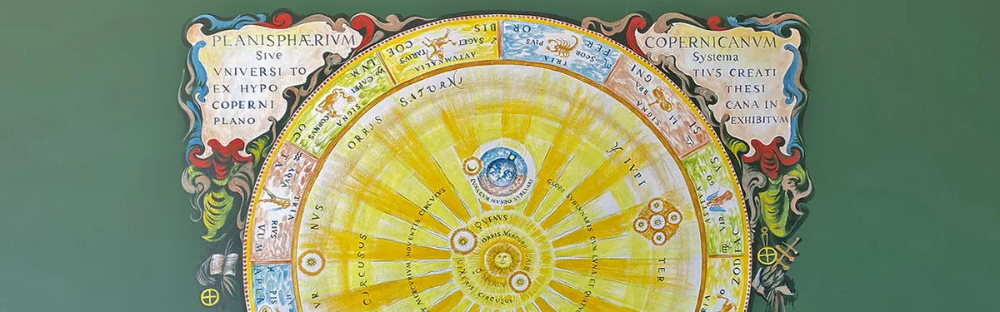

Opleider
Jungiaans Instituut

Het Jungiaans instituut
Het Jungiaans instituut – Rump Academie voor Dieptepsychologie is een privé instituut te Nijmegen. Het is opgericht in 1990 en inmiddels uitgegroeid tot een toonaangevende instelling. Het is het eerste en enige instituut in Nederland dat zich bezighoudt met de ontwikkeling van de dieptepsychologie.
Het instituut biedt psychotherapeutische opleidingen en trainingen vanuit de theoretische concepten van de dieptepsychologie. In de opleidingen komt een verscheidenheid aan methoden aan bod, zoals psychoanalyse, analytische psychologie en analytische therapie. Ook maakt de student kennis met onder andere de Gestalttherapie, Rogeriaanse therapie, hypnotherapie, NLP, directieve therapie, systeemtherapie en gedragstherapie.
Onze Missie
Het Jungiaans instituut – Rump Academie voor Dieptepsychologie:
- Is gericht op het ontwikkelen van de dieptepsychologie.
- Ziet het als haar doel om therapeuten op te leiden die zijn gericht op de individuele mens.
- Vindt dat de therapie dient aan te sluiten bij de individuele mens. Het moet niet zo zijn dat mensen moeten passen in een protocol.
- Stelt zich ten doel om therapeuten af te leveren die de oorzaak van een klacht of van klachten opheffen, waardoor in het dagelijks functioneren weer evenwicht ontstaat.
- Wil de therapie aan laten sluiten bij de mens in de huidige tijdgeest en maatschappelijke situatie.
- Streeft naar het ontwikkelen van een geesteswetenschap in de juiste betekenis van het woord.
Diverse opleidingen en trainingen
Jungiaans Analytische Therapie®
De opleiding Jungiaans Analytische Therapie staat open voor diegenen die geschoold zijn op WO, HBO of vergelijkbaar niveau: psychiaters, psychologen, psychotherapeuten, psychosociaal werkers. Maar ook wie een andere achtergrond heeft en zowel theoretisch als therapeutisch geschoold wil worden in de dieptepsychologie, bijvoorbeeld in het kader van omscholing, kan deelnemen aan deze opleiding.
De opleiding tot Analytisch Therapeut duurt vier jaar (in totaal 127 ECTS-punten). De opleiding is, onder meer door de eigen leeranalyse, ook sterk gericht op de persoonlijke ontwikkeling van de student.
Naast bovenstaande opleidingen bieden we op regelmatige basis gespecialiseerde trainingen aan. Dit zijn trainingen voor professionals die geaccrediteerd willen werken met dieptepsychologische principes en instrumenten.
Het instituut biedt daarnaast trainingen en workshops om met dieptepsychologische thema’s te werken als therapeut, coach of adviseur – ook voor mensen die zichzelf willen blijven ontwikkelen.
Bekijk hier het trainingsoverzicht.
Over de Bedrijvengids
De bedrijvengids is uw one-stop bron voor betrouwbare informatie over lokale ondernemingen en diensten. Het biedt een uitgebreide lijst van bedrijven, variërend van loodgieters tot restaurants, compleet met contactgegevens en beoordelingen. Met behulp van een bedrijvengids vindt u snel en efficiënt de dienst die u nodig heeft.
Contact en openingstijden
- AdresConferentieoord de Poort, Biesseltsebaan 34, 6561 KC Groesbeek
- Openingstijden
maandag 09:00–21:00 dinsdag 09:00–21:00 woensdag 09:00–21:00 donderdag 09:00–21:00 vrijdag 09:00–21:00 zaterdag 09:00–21:00 zondag 09:00–21:00 - Goed om te wetenvolwassenencertificaat of diplomagratis kennismaking
- Contactjungiaansinstituut.nl
0243440084
info@jungiaansinstituut.nl
Facebook - ReviewsBekijk de reviews op Google Maps
Meer opleiders in Nijmegen
 UitgelichtDe Opstap - Het cursuscentrum in NijmegenCipresstraat 154, 6523 HR Nijmegentaalcursusmuzieklescreatieve cursusvolwassenenBekijk aanbod
Lindenberg CultuurhuisRidderstraat 23, 6511 TM Nijmegenmuzieklescreatieve cursuskinderenvolwassenen
UitgelichtDe Opstap - Het cursuscentrum in NijmegenCipresstraat 154, 6523 HR Nijmegentaalcursusmuzieklescreatieve cursusvolwassenenBekijk aanbod
Lindenberg CultuurhuisRidderstraat 23, 6511 TM Nijmegenmuzieklescreatieve cursuskinderenvolwassenen